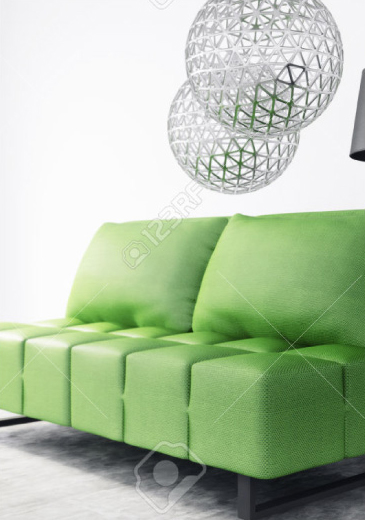

NEWS最新消息
綠建築不只有環保，還有助於睡眠、改善頭痛
綠建築訴求對環境友善，充分利用大自然的能源來取代人工能源，不止環保、愛地球外，研究還發現，綠建築對人體也有著正向的影響。 居住在城市中，每逢夏天，一踏出戶外就炙熱難捱，民眾普遍歸咎於全球暖化所帶來的氣候變遷，但是，都市的熱島效應所帶來的影響也不容忽略。大量的水泥建築、道路鋪面、交通等等，在在都是熱島效應的根源。而綠建築的設計概念也因此而誕生，盡量回歸到自然、保護生態環境，並善加使用自然能源。
綠建築不僅對環境友善外，沒想到，對於在綠建築中工作的人來說居然也有益處！根據英國《衛報》報導，這項研究由哈佛大學公共衛生學院所主持，觀察到，在經認證的綠建築裡工作的員工，比起在一般辦公大樓工作的員工，上班時的認知能力更高，且在夜裡的睡眠也更好，令人相當驚嘆綠建築深遠的影響力。台灣自1999年開始推動綠建築，甚至還有綠建築標章認證制度，發展至今快20年，是許多國家學習的典範。中國時報報導，健行科大土木系老師郭來松就表示，台灣是國際第4個研究綠建築的國家，更是熱帶地區第1個，大陸、東南亞等國，都常常到台灣學習。

綠建築訴求對環境友善，充分利用大自然的能源來取代人工能源，不止環保、愛地球外，研究還發現，綠建築對人體也有著正向的影響。居住在城市中，每逢夏天，一踏 出戶外就炙熱難捱，民眾普遍歸咎於全球暖化所帶來的氣候變遷，但是，都市的熱島效應所帶來的影響也不容忽略。
大量的水泥建築、道路鋪面、交通等等，在在都是熱島效應的根源。而綠建築的設計概念也因此而誕生，盡量回歸到自然、保護生態環境，並善加使用自然能源。綠建築不僅對環境友善外，沒想到，對於在綠建築中工作的人來說居然也有益處！根據英國《衛報》報導，這項研究由哈佛大學公共衛生學院所主持，觀察到，在經認證的綠建築裡工作的員工，比起在一般辦公大樓工作的員工，上班時的認知能力更高，且在夜裡的睡眠也更好，令人相當驚嘆綠建築深遠的影響力。
哈佛大學更指出，綠建築的採光、通風比起傳統大樓更多，日光多，能夠改善夜間睡眠品質；通風的環境，則減低二氧化碳濃度，家具、地毯所釋出的揮發性有機化合物的數量。連上班族常見的毛病，如：頭痛、眼睛及呼吸道刺痛的現象都減少了30%。 台灣自1999年開始推動綠建築，甚至還有綠建築標章認證制度，發展至今快20年，是許多國家學習的典範。中國時報報導，健行科大土木系老師郭來松就表示，台灣是國際第4個研究綠建築的國家，更是熱帶地區第1個，大陸、東南亞等國，都常常到台灣學習。
(原文網址: 「綠建築」不只有環保？還有助睡眠、改善頭痛 | 好房網News | 關心您住居的房地產新聞)